Main language and English proficiency by age
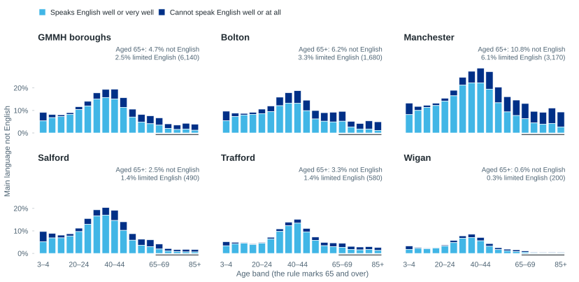
Census 2021, usual residents aged 3 and over. “Limited English” = cannot speak English well or at all.
From BHC to CSF setup to blood biomarkers
Clinical Senior Lecturer UoM | Consultant LL Psychiatrist GMMH NHS FT
NHS RDN NW Dementia & Neurodegeneration Lead | Clinical Director, MBHC
Director, GM Dementia Research Centre
Roche · Dublin · Oct 2026
These slides are online, during the talk and for a week afterwards:
sadneurons.github.io/bhcroche
Meeting the patients’ need
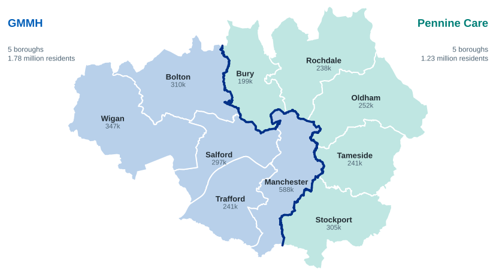
Population: ONS mid-year estimates 2025. Boundaries: ONS Open Geography, local authority districts 2024.
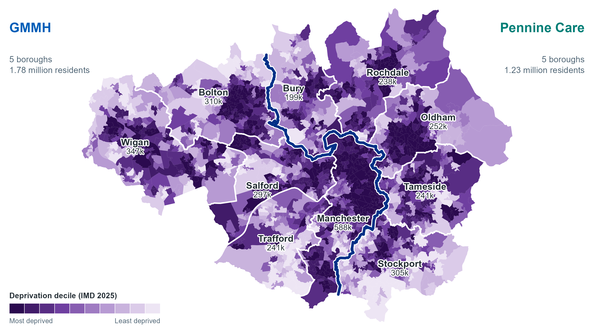
English Indices of Deprivation 2025 (MHCLG), by 2021 lower layer super output area: 1,702 neighbourhoods. Darkest = most deprived tenth of England. Boundaries: ONS Open Geography.
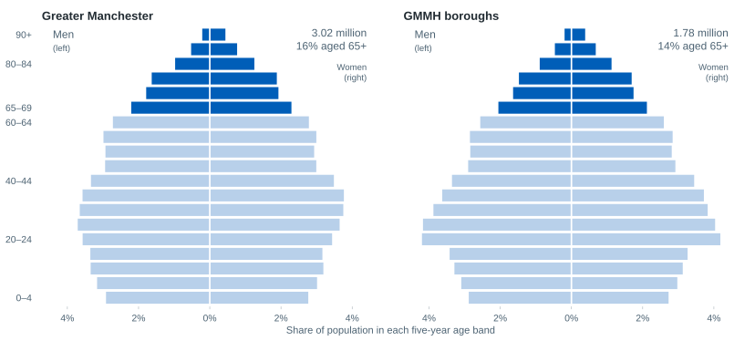
ONS mid-year population estimates 2025. Darker bars are ages 65 and over.
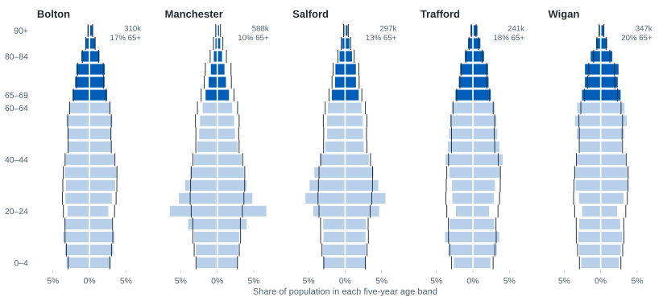
ONS mid-year population estimates 2025. Black ticks show the Greater Manchester profile; men left, women right.
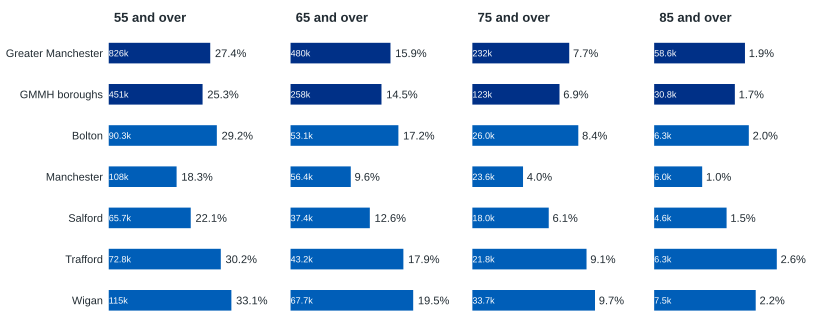
ONS mid-year population estimates 2025. Share of all residents; number of people inside each bar.
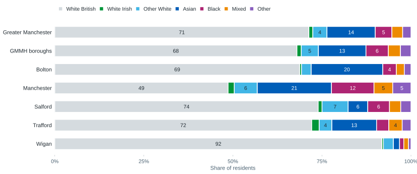
Census 2021, usual residents. Figures are percentages.
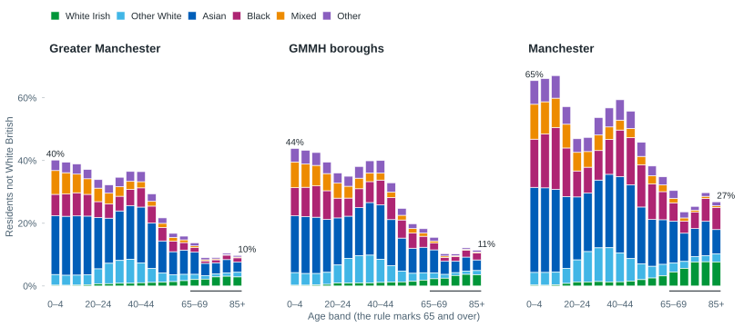
Census 2021, usual residents.

Census 2021, usual residents aged 3 and over. “Limited English” = cannot speak English well or at all.
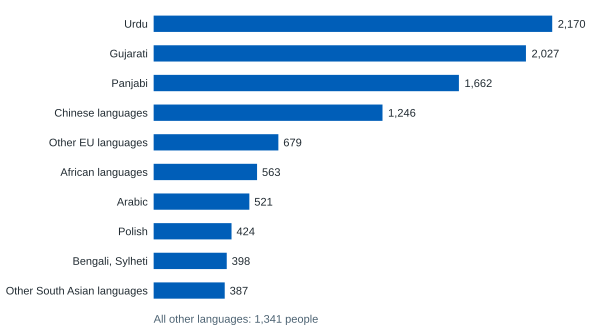
Census 2021. Residents aged 65 and over in the five GMMH boroughs whose main language is not English (11,418 people).
919 autopsied dementia cases · sensitivity 71–87% · specificity 44–71%
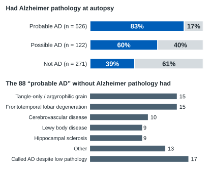
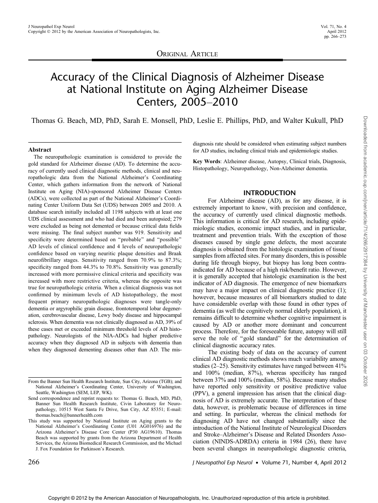
11,409 patients · management changed in 60% (MCI) and 64% (dementia)
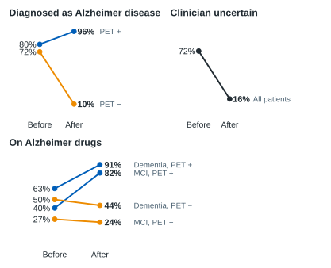
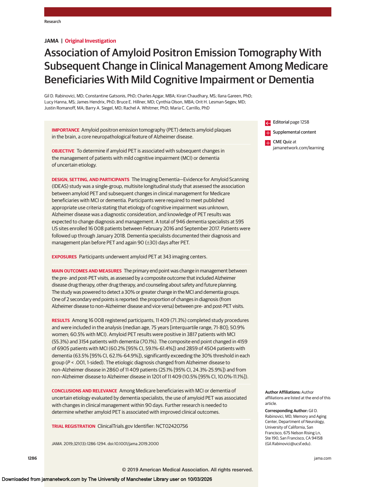
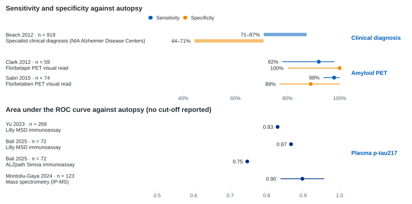
Lines are 95% confidence intervals where published; the Beach bars are the range across its definitions. Reference standards differ between studies, so no pooled estimate is shown. Peer-reviewed autopsy studies only.
11,409 IDEAS patients with MCI or dementia of uncertain cause
60% and 64% had management changed after amyloid PET (MCI and dementia)
18–67% of 88 people misdiagnosed with Alzheimer’s were on potentially inappropriate medication
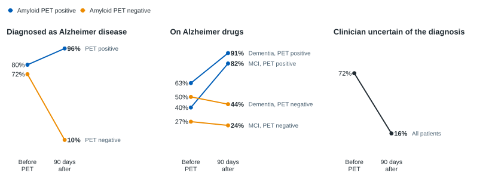
Rabinovici et al. JAMA 2019;321:1286–1294 (single-group study, no control arm). Medication figure: Gaugler et al. BMC Geriatr 2013;13:137.
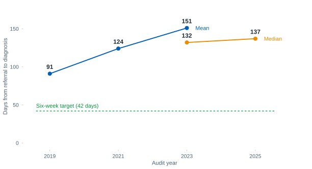
10% diagnosed within six weeks of referral (2023)
44 to 347 days range of average waits between services (2023)
2% of patients had a specialist investigation such as PET or CSF (2021 and 2023)
RCPsych National Audit of Dementia: Memory Assessment Services Spotlight Audits 2021 and 2023/24, and Survey of Memory Assessment Services 2025. The 2019 figure is the NHS England audit as cited in the 2021 report.
3.5 years from first symptoms to diagnosis (international meta-analysis)
61 people recruited to late-stage dementia drug trials in England, 2021–22
2% of people with dementia registered with Join Dementia Research
Kusoro et al. Int J Geriatr Psychiatry 2025;40:e70129. Alzheimer’s Research UK, Sept 2022 (NIHR figures). Dobson et al. J Neurol Neurosurg Psychiatry 2024;95:796–803. Dixon et al. (DETERMIND) Dementia 2026.
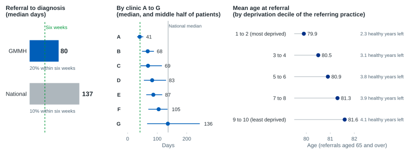
GMMH: seven memory clinics in five boroughs, 34,575 accepted referrals, January 2021 to July 2026. National: RCPsych National Audit of Dementia 2023/24 and 2025. Healthy years left: ONS healthy life expectancy by deprivation decile at the age of referral.
From the prevention and biomarker evidence base, through a single-clinician clinic, to a four-way partnership
Evidence and advocacy 2015–2019
2015 FINGER trial (Lancet): multidomain lifestyle intervention preserves cognition 2017 Lancet Commission: nine modifiable factors, ~35% of dementia Oct 2017 Edinburgh Consensus proposes a Brain Health Clinic Network 2018 Tier-3 referral model in GMMH fails to gain traction 2019 Oxford meeting: Dunne, Mackay, Raymont, Coulthard, Ritchie; nucleus of the UK Brain Health Coalition 2020 Leroi BHC blueprint; Frisoni European Brain Health Service papers; Brain Health Scotland launches
Starting from nothing 2020–2023
2020–21 Biogen-sponsored BHC Consortium webinars keep the network alive through COVID 2021 Manchester Consensus on MCI (Age and Ageing) Early 2022 First patients seen at Daisybank Road: one clinician, £14k MAHSC funding, CSF batched to UCL Apr 2023 First lumbar puncture in repurposed GMMH ECT recovery 2023 HSJ Modernising Diagnostics Award Dec 2023 Lilly / DPUK CSF data partnership begins (four UK sites; support GMMH assays)
Partnership and scale 2024–2026
Q1 2024 CSF assays move to NMGH lab with Roche; turnaround 87 to 14 days Oct 2024 Philanthropy £100k; clinic relocates to the NIHR CRF, Grafton Street; MFT and GMMH staff seconded 2025 Two HSJ awards; Roche proBrain Alliance flagship site (w/ Belfast) for Elecsys plasma pTau217 2025–26 Philanthropy / Alzheimer’s Society £1.183m SLA; GMMH–MFT–AS-GMHSCP Partnership Board; RIBA Stage 1 funded Mar 2026 220 biomarker-confirmed diagnoses; Oxford Summit; Industry £50m in negotiation Q3 2026 Phase 2 one-stop clinic: same-day MRI with ASL, blood-first pTau217, vascular workup, cohort study
Open marker: planned. Sources: MBHC narrative history (March 2026); Ngandu et al. 2015; Livingston et al. 2017, 2020, 2024; Ritchie et al. 2017; Dunne et al. 2021.
A good biomarker
Setting a cut-off
Why two cut-offs
Standards: triage ≥90% sensitivity; confirmation ≥90% sensitivity and specificity; uncertain zone ≤20% (Schindler et al. Nat Rev Neurol 2024; Alzheimer’s Association guideline 2025).
Manchester Brain Health Clinic triage, 26 August to 2 October 2026 (early results). CDR = Clinical Dementia Rating, estimated by a clinician from the referral. Criteria follow the UK licences for anti-amyloid antibodies.
Questions?
Default Green Orange Red Purple Grey Solid
AD biomarkers in a UK memory clinic · Roche Dublin · Oct 2026 All content represents the opinion of Dr. Ross Dunne, not Roche or affiliates.
![Left: of patients in five London memory services, 71% were diagnosed with possible Alzheimer disease and 32% would be eligible to be triaged for anti-amyloid treatment; in a specialist clinic 14% were potentially eligible. Right: within 18 months of a dementia diagnosis, 65% had a lasting power of attorney for health and welfare, 45% had an informal conversation with their carer, 22% had done no future care planning, 14% had a conversation with a GP, 10% had an advance decision and 9% an advance statement.](images/late_diagnosis_evidence.svg)
![Eligibility cascade for referrals screened for the Manchester Brain Health Clinic, as percentages of all referrals. 50% had an estimated Clinical Dementia Rating of 2 or 3, or none recorded, leaving 50% at an early stage. Age, missing history, anticoagulants, haemorrhage or stroke, seizures and frailty leave 27%. Expected values from stated rates then leave 22% going on to biomarker testing, 10% amyloid positive, 8% after MRI exclusions, 6% wanting treatment and 5% after excluding APOE e4 homozygotes.](images/gmmh_bhc_eligibility_cascade.svg)